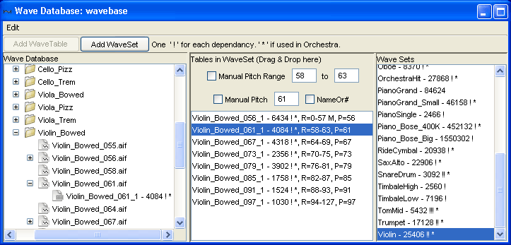

|
Mobileer Instrument Editor
CONFIDENTIAL and PROPRIETARY - © 2002-6 Mobileer Inc.
|
Mobileer Instrument Editor
Creating a WaveSet
A WaveSet is a collection of WaveTables. The WaveTables are all from the same Instrument but played at different pitches. An Instrument can use a WaveSet as the basis for its sound. When a note is played it will select the WaveTable closest in pitch. Note the wavetable name in the screenshot below, "Violin_Bowed_056_1". The _056_ represents MIDI Pitch 56 or "G#3".

- To create a new WaveSet, click the "Add WaveSet" button and give it a name. Typical names are "Clarinet" or "YamahaGrand" or "Violin_small".
- To add a WaveTable to a WaveSet:
- Select the WaveSet you wish to add to. Any WaveTables already in the WaveSet will appear in the middle section.
- Select the WaveTable in the tree on the left, hold the mouse button down and drag it into the middle section. (Note, wave sample files can not be added to a WaveSet, only WaveTables derived from a wave sample.
- Drop it by releasing the mouse button. It should appear as a member of the WaveSet. The order is not important.
- To remove a WaveTable from a WaveSet, select the WaveTable in the WaveSet and then select "Remove {name} From WaveSet" from Edit menu.
- If you are creating a waveset for a drum you should just make a WaveSet with one WaveTable in it.
| Top | Previous | Next |